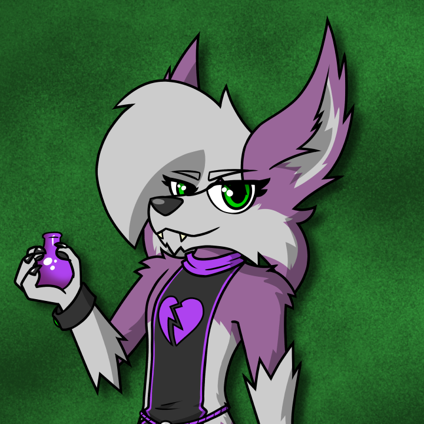

About Me
Hello, and welcome to my personal website. In the vastness of the world wide web I am known as 不在猫 (fuzai neko), but my friends call me Kingsley!
If somehow it is not obvious, this is my personal website to showcase my artwork and personal interests. Now a little about myself, I was born in the 1990s, and grew up around a lot of technology, games, cartoons and art contemporary to the turn of the millennium. Sonic the Hedgehog, Klonoa, StarFox, and Digimon are just a few of the things that inspired me both then and now as I develop my skillsets in order to make my dreams a reality.
Some of the hobbies I spend my time on these days include, but are not limited to, character illustration, 3D modeling, game design, live streaming, web development, language learning and fursuiting. With my intro out of the way, please meet my characters.
Kingsley McClaw
|  |
A lavender hybrid of a lynx and a fox. Mischievous in nature, wearing a wardrobe of mostly all black, and his hair always on point, this illusive fellow is rumored to have been seen in various forms across dimensions! He has been spotted as an anthro, mobian, were-beast, and more. Rumors have it secret organizations wish to research this strange ability.
He is an avid fan of games, travel and exploration and generally seeking an easygoing life, going by a motto of making each day the best one yet! |
The Cat with No Name
Another friend to meet is fuzai, even we don't know his real name. A hybrid of a lynx and a phoenix, he is very timid, often spending his time drawing or writing. He commonly will not speak unless spoken to, even if he doesn't talk much, he still appreciates your company. In addition to creating artworks, he enjoys exploring art made by others too, especially stories with anthropomorphic animal characters. Fuzai, while being the type to sleep in until noon, finds the prospect of bringing something new into the world through creative endeavors deeply motivating.
Personal growth, in his words, means recognizing flaws and embracing the journey of improvement.
|
|
This website has been a fun experiment to work on, built from scratch, learning lots of new things each day, and inspired by some of my wonderful friends. It has been a great journey, I hope you enjoyed your visit here!
Also, just a notice, most everything on this website is created by myself for this website, with some exceptions including logos and images representing outside entities such as social media or games. I do not claim ownership of the artwork or the games/platforms themselves, obviously. Usages of these images is with fair use intent, if you are the owner of any outside resources and would like to submit a takedown request, please find my information on the Contact page.
Last updated on July 21, 2023